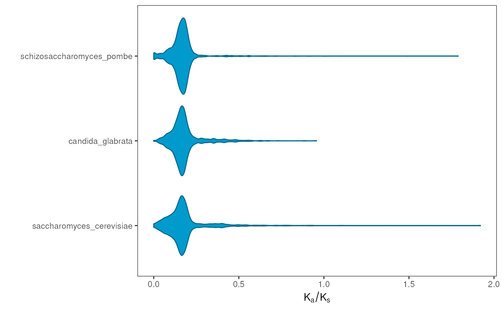

Plot distributions of substitution rates (Ka, Ks, or Ka/Ks) per species
Source:R/visualization.R
plot_rates_by_species.RdPlot distributions of substitution rates (Ka, Ks, or Ka/Ks) per species
Usage
plot_rates_by_species(
kaks_list,
rate_column = "Ks",
bytype = FALSE,
range = c(0, 2),
fill = "deepskyblue3",
color = "deepskyblue4"
)Arguments
- kaks_list
A list of data frames with substitution rates per gene pair in each species as returned by
pairs2kaks().- rate_column
Character indicating the name of the column to plot. Default: "Ks".
- bytype
Logical indicating whether or not to show distributions by type of duplication. Default: FALSE.
- range
Numeric vector of length 2 indicating the minimum and maximum values to plot. Default:
c(0, 2).- fill
Character with color to use for the fill aesthetic. Ignored if bytype = TRUE. Default: "deepskyblue3".
- color
Character with color to use for the color aesthetic. Ignored if bytype = FALSE. Default: "deepskyblue4".
Details
Data will be plotted using the species order of the list. To change the order of the species to plot, reorder the list elements in kaks_list.
Examples
data(fungi_kaks)
# Plot rates
plot_rates_by_species(fungi_kaks, rate_column = "Ka_Ks")
